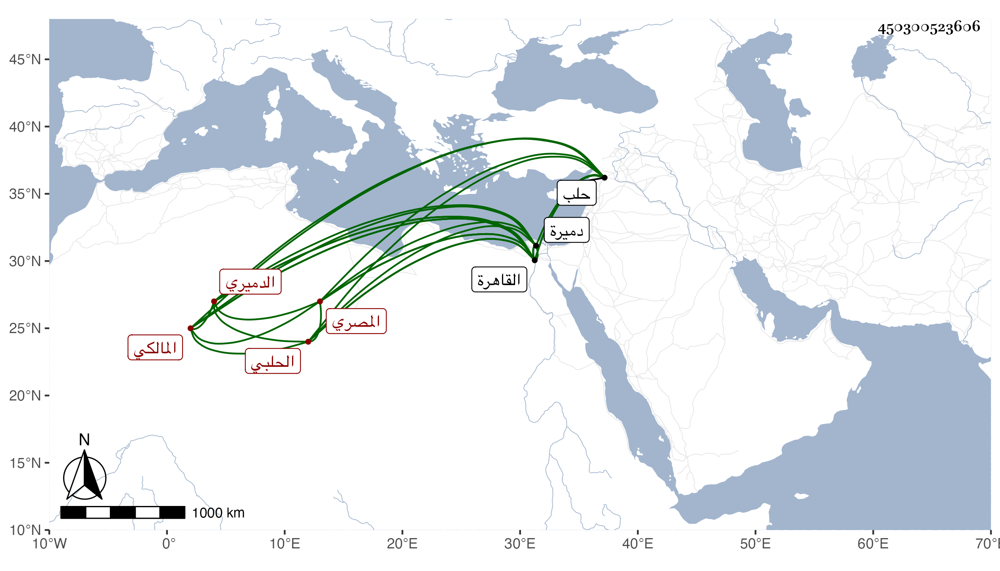

0902Sakhawi.DawLamic.ITO20230111-ara1.EIS1600.450300523606
Biography ID: 450300523606
156
علي بن يوسف بن مكي بن عبد الله نور الدين بن الجلال الحلبي الأصل الدميري ثم المصري المالكي ويعرف بابن الجلال لقب أبيه وكان جده يعرف بابن نصر . أصله من حلب وقدم جده القاهرة ثم سكن دميرة فولد له ابنه فنشأ مالكيا وسكن القاهرة وناب عن البرهان الأخنائي وعرف بجلال الدميري . وولد له صاحب الترجمة فاشتغل حتى برع في المذهب واقتصر على الفقه بحيث لم يكن يدري شيئا سواه وكان كثير النقل لغرائب مذهبه شديد المخالفة لأصحابه حتى اشتهر صيته بذلك مع جودة الكتابة على الفتاوى وناب في الحكم مدة ثم استقل بالقضاء في المحرم سنة ثلاث بعد صرف ابن خلدون ببذل مال اقترضه بفائدة لحنقه منه وعيب بذلك حيث حمله حنقه على هلاك نفسه ببذل الرشوة ، وكان منحرف المزاج مع المعرفة التامة بالأحكام والمكاتيب فاتفق أنه حضر مع الصدر المناوي فعارضه في قضية فغضب الصدر وكلمه بكلام فاحش فتأثر من ذلك ولم يقدر على الانتصار وحصل له انكسار من ذلك الوقت ، ثم سافر مع العسكر إلى دفع اللنك فمات قبل الوصول في جمادى الأولى سنة ثلاث ودفن باللجون وقد زاد على السبعين ولم يستكمل نصف سنة بيعت داره وبستانه وكانا موقوفين في وفاء دينه رحمه الله وعفا عنه . ذكره شيخنا في إنبائه ولم يذكره في رفع الإصر فاستدركته في ذيله ، وقال المقريزي : كان ينوب عن القضاة المالكية بالقاهرة ولا يفارق قاض إلا بشر طويل عريض حتى عرف بشراسة الخلق وكثرة المشارة وهجاه بعضهم بقطعة طويلة منها يا ابن الجلال شنقك حلال وقال في عقوده أنه ما زال يروم القضاء حتى تقلده فلم يمتع به ولا حمد فيه عفا الله عنه .
